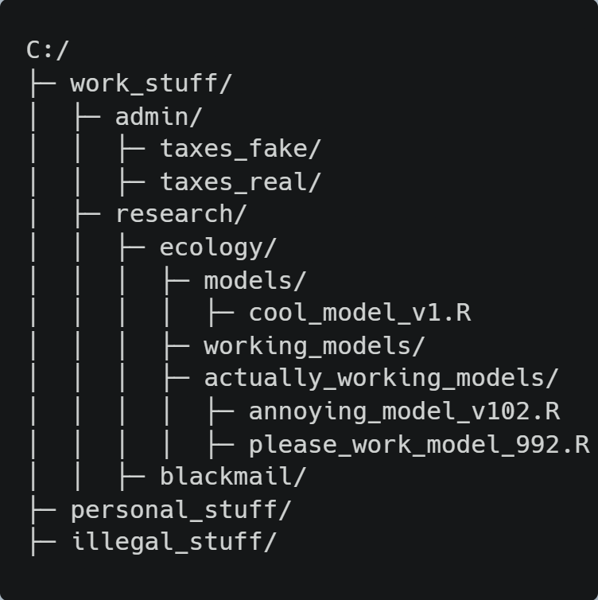

# Lines after "#" are comments and are not run by R
# Check whether file "i_exist.txt" exists (it should)
# Note this path is specific to my personal computer
# and you will need to alter yours to work
file.exists("C:/i_exist.txt")[1] TRUEDirectories are locations for storing files, or other directories, on your computer. Often referred to as folders.
Individual files are referenced by using a directory tree which lists all the directories entered and the name of the desired from a given starting point.

The series of directories entered to get to a file is called a path. There are two ways to reference a file’s path
Absolute
This type of path specifies the location of the file from the start of the tree, the root directory. E.g.
C:/work_stuff/research/ecology/actually_working_models/please_work_model_992.R
/ is used to enter directories, in windows file manager \ is used.Relative
This type of path is relative to the present working directory. E.g. if I open R or a terminal in actually_working_models/ the same path as above would be please_work_model_992.R
../. E.g. ../models/cool_model_v1.RFrom here on the code presented is related to the files present in the intro_to_R_data available here.
# Lines after "#" are comments and are not run by R
# Check whether file "i_exist.txt" exists (it should)
# Note this path is specific to my personal computer
# and you will need to alter yours to work
file.exists("C:/i_exist.txt")[1] TRUEIndependent to changes in position of working
Often long, clunky, and not easy to work with
Not reusable or repeatable.
Not recommended
setwd()DO NOT DO THIS
# Save your current working directory to be able
# to follow the rest of the tutorial
original_wd <- getwd() #get current working directory
setwd("C:/")
file.exists("i_exist.txt")[1] TRUE# Reset working directory
setwd(original_wd)Projects automatically set your working directory to the directory containing the project, specifically containing the .Rproj file.
file.exists("data/i_exist.txt")[1] TRUEAs the working directory is always where the .Rproj file is if you share the project it is fully reusable*
*Other than package and version dependencies
Projects do more than set your working path they are really useful to divide your work into multiple contexts, each with their own working directory, workspace, history, and source documents. Can be used as self contained units devoted to one thing, e.g. a paper or chapter of a thesis.
File > New Project

When a new project is created RStudio:
Creates a project file (with an .Rproj extension) within the project directory. This file contains various project options (discussed below) and can also be used as a shortcut for opening the project directly from the filesystem.
Creates a hidden directory (named .Rproj.user) where project-specific temporary files (e.g. auto-saved source documents, window-state, etc.) are stored. This directory is also automatically added to .Rbuildignore, .gitignore, etc. if required.
Loads the project into RStudio and display its name in the Projects toolbar (which is located on the far right side of the main toolbar)
Within data/ there is an example data set containing tree modelling parameters called demography.csv. This data will form the basis of the discussion on data types and structures.
# Load the data use the base library function
tree_dem <- read.csv("data/demography.csv")
# Alternative import which can be faster for large data
# install.packages("data.table")
# library("data.table")
# tree_dem <- data.table::fread("data/demography.csv")First lets look what type of data is in tree_dem
str(tree_dem)'data.frame': 11 obs. of 16 variables:
$ species : chr "Pipexc" "Melram" "Launov" "Hedarb" ...
$ growth_form : int 1 1 1 1 NA 1 2 1 3 3 ...
$ max_hgt : int 35 15 35 6 12 35 10 15 12 4 ...
$ max_dbh : num 1.2 0.5 1.2 0.3 0.6 2 0.45 0.9 0.2 0.2 ...
$ shade_tolerance : num 0.25 0.4 0.25 0.4 0.55 0.35 0.25 0.1 NA 0.1 ...
$ repro_age : int 20 10 20 10 10 20 2 10 2 10 ...
$ seed_prod : int 10 10 10 NA 10 10 10 10 10 10 ...
$ ldd_dispersal_dist: int 30 30 30 30 30 30 30 30 30 30 ...
$ gap_maker : int 1 0 NA 0 0 1 0 1 0 0 ...
$ regen_height : int 35 35 35 35 35 35 35 35 35 35 ...
$ supp_mortality : num 0.025 0.125 0.025 0.125 0.125 0.1 0.025 0.125 0.125 0.125 ...
$ herbivory : num 0.8 0.5 0.5 0.5 0.8 0.1 0.1 0.1 0.1 0.1 ...
$ edge_response : num 0.1 0.5 0.1 0.3 1 0.1 0.1 1 0.3 NA ...
$ seedling_survival : num 0.5 0.5 0.5 0.6 NA 0.4 0.5 0.5 0.2 0.6 ...
$ sapling_survival : num 0.7 0.7 NA 0.7 0.8 0.6 0.7 0.7 0.5 0.8 ...
$ native : logi TRUE TRUE NA TRUE TRUE TRUE ...chr - character or string values. Any element contained between ' ' or " " are characters or strings
int - integer. Data type specifies real values without decimal points e.g. 1. Often printed with suffix L to specify integer data
num - numeric. Data type represents all real numbers with or without decimal values e.g. 1.1. Integers are a subset of numeric
logi - logical. Data type with only two boolean values TRUE or FALSE.
Null or missing values are represented in R by NA. It is a logical constant of length 1 which contains a missing value indicator. NA can be coerced to any other data type.
Data structures are often discussed as data types so don’t get confused if you do not see the same distinction else where

The most basic element of data containing a single value.
x <- 9 # x is a single element
# Access element in first row and first column
tree_dem[1,1][1] "Pipexc"A vector is a collection of elements of the same type
vector() # empty 'logical' vectorlogical(0)vector("character", length = 3) # a vector of mode 'character' with 3 elements[1] "" "" ""numeric(5) # a numeric vector with 5 elements[1] 0 0 0 0 0You will almost never create vectors like this but rather define them explicitly.
c("a", "b", "c") #c() concatenates the elements within[1] "a" "b" "c"Or accessed from your data
tree_dem[[3]] [1] 35 15 35 6 12 35 10 15 12 4 23In R matrices are an extension of vectors. They are not a separate type of object but simply a vector with dimensions; the number of rows and columns.
As with vectors, the elements of a matrix must be of the same data type.
m <- matrix(nrow = 2, ncol = 2)
m [,1] [,2]
[1,] NA NA
[2,] NA NAdim(m)[1] 2 2To build a matrix by hand
matrix(c(1,2,1,2),
nrow = 2,
ncol = 2) [,1] [,2]
[1,] 1 1
[2,] 2 2Note matrices in R are filled column-wise, unless the byrow = TRUE argument is specified
Lists act as generic containers. Unlike atomic vectors, the contents of a list are not restricted to a single type and can encompass any mixture of data types. Lists are sometimes called generic vectors, because the elements of a list can by of any type of R object, even lists containing further lists. They are one of the most commonly used data structures in R.
list(1, "b", FALSE, c(1,2,3))[[1]]
[1] 1
[[2]]
[1] "b"
[[3]]
[1] FALSE
[[4]]
[1] 1 2 3A list can be directly accessed from the example data using the technique below. This creates a named list with each element named to the column name they were in.
as.list(tree_dem[3,])$species
[1] "Launov"
$growth_form
[1] 1
$max_hgt
[1] 35
$max_dbh
[1] 1.2
$shade_tolerance
[1] 0.25
$repro_age
[1] 20
$seed_prod
[1] 10
$ldd_dispersal_dist
[1] 30
$gap_maker
[1] NA
$regen_height
[1] 35
$supp_mortality
[1] 0.025
$herbivory
[1] 0.5
$edge_response
[1] 0.1
$seedling_survival
[1] 0.5
$sapling_survival
[1] NA
$native
[1] NAA data frame is a very important data type in R. It’s the most common data structure for most tabular data and what we use for statistics. A data frame is a special type of list where every element of the list has same length (i.e. data frame is a “rectangular” list). This is the default data structure created when using read.csv() or read.table() , so tree_dem is a data frame which we can check with class()
class(tree_dem)[1] "data.frame"To create a data frame from hand
df <- data.frame(col1 = letters[1:10], col2 = 1:10, logic1 = logical(10))
df col1 col2 logic1
1 a 1 FALSE
2 b 2 FALSE
3 c 3 FALSE
4 d 4 FALSE
5 e 5 FALSE
6 f 6 FALSE
7 g 7 FALSE
8 h 8 FALSE
9 i 9 FALSE
10 j 10 FALSE